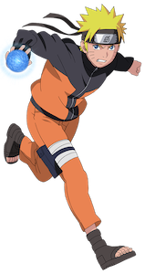

Facial Expressions
Anime has a large range of facial expressions. Many of these were developed for the manga format.
Take a look at these facial expressions and try them in your own drawing.
- happy
- unsure
- annoyed

A happy face uses two thick curved lines for the eyes and a wide mouth.
An unsure face can be drawn with open eyes and a short, thin line for the mouth.

An annoyed face can be drawn with large eyes and a short, diagonal line for the mouth.
Favourite Anime Character

Naruto
A young ninja who dreams of becoming the leader of his village.